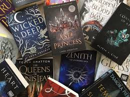

Fantasy is a subgenre that includes: magical elements, mythical creatures, or imaginary worlds. below, you will find a link to list of fantasy books with a review

YA Romance books often explore:navigating first love, high school, and coming-of-age challenges, usually with a central love story that drives the plot.

Sci-fi/Dystopian books feature: protagonists navigating nightmarish, oppressive future societies often shaped by technological overreach
Still interesed in YA? Click on the image below to see the top 100 YA authors